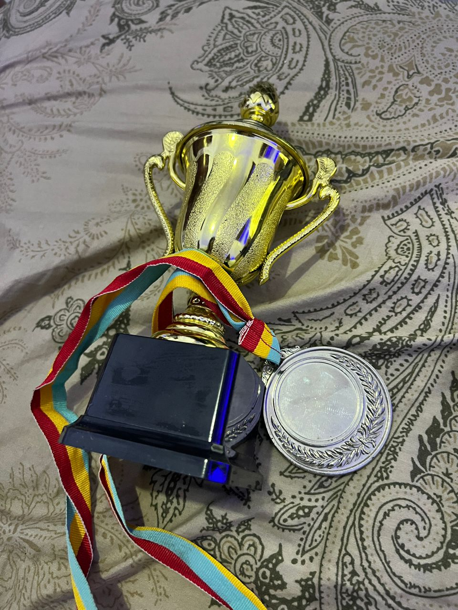
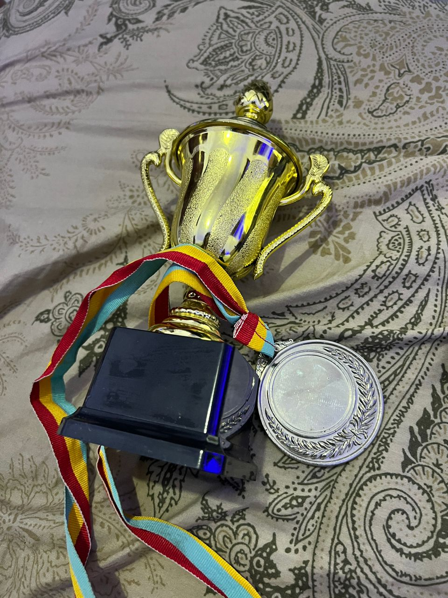

About Me

Hello! I'm Maryelie, Im currently a student at jewels and I am in MYP year 5 which also Grade 10 and I'm 16 years old and Im Congolese
I would describe myself as a kind-hearted person,a person thats loves to help and a tryhard I dont like giving up easily even though I say I will but i don't and In my about me I will be talking about many things like my achievements,My Strengths and weakness,My hobbies,and My likes and Dislikes
So first i will talk about My achievements I won a Medal at the Interhouse for feminin Football in shapphire at our school but its is not my first i have won throphies and medals for being a great goalkeeper. playing some tournaments and have aqucired some skills in the sport. Another achievement is that I maintain a pretty good academic score so far. I've mastered my way through many games such as (sims,destiny,goodcoffee,greatcoffe).Now I will talk about my strengths and weaknessess I would say my stregths are my determination, my way of solving problems thinking out of the box, Im empathetic and love helping person too some of my weaknessess are that I'm not a good time manager which Im working on to improve,another one would be me sleeping too much. My hobbies are swwimming,reading,drawing,playing video games,baking,cooking,and sleeping there more but let's stop here We can now move to My Likes and Dislikes I like many of things food being one,movies,podcasts,photography,reading,sleeping basically the same thing as my hobbies since they are things you like to I dislike owls mainly birds and mean or rude people
 
